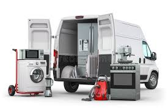

Le métier de livreur en électroménager consiste à assurer la livraison et l’installation d’appareils électroménagers chez les clients. Ce professionnel est chargé de transporter des équipements tels que des réfrigérateurs, des machines à laver ou des fours en veillant à leur bon état pendant le trajet. Il doit également effectuer l’installation des appareils, les raccorder aux réseaux d’eau et d’électricité si nécessaire, et parfois réaliser des tests pour s’assurer de leur bon fonctionnement. En plus de la manutention, le livreur en électroménager joue un rôle de conseiller auprès des clients, en leur expliquant le fonctionnement de leurs nouveaux équipements et en leur donnant des recommandations d’entretien. Ce métier demande une bonne condition physique, un sens du service et des compétences techniques pour assurer une installation conforme aux normes de sécurité.
Livraisons electromenagers

Déménagements
Le métier de déménageur consiste à assurer le transport des biens et des meubles d’un lieu à un autre, que ce soit pour des particuliers ou des entreprises. Ce professionnel est chargé de l’emballage, du chargement, du transport et du déchargement des objets en veillant à leur protection pour éviter tout dommage. Il peut également démonter et remonter certains meubles, utiliser du matériel spécifique comme des monte-meubles et organiser l’agencement des objets dans le camion pour optimiser l’espace et garantir leur sécurité. Le déménageur doit faire preuve de rigueur, de force physique et d’un bon sens de l’organisation. Il est aussi en contact direct avec les clients, ce qui nécessite des qualités relationnelles et un bon esprit d’équipe pour assurer un service efficace et professionnel.
Nettoyages Industriels
Le métier de nettoyeur industriel consiste à assurer l’entretien et le nettoyage en profondeur de locaux professionnels, d’usines, d’entrepôts ou de sites de production. Ce professionnel utilise du matériel et des produits spécifiques pour garantir l’hygiène et la propreté des espaces, en respectant des normes strictes, notamment dans les secteurs sensibles comme l’agroalimentaire, la chimie ou la santé. Il peut être amené à manipuler des machines de nettoyage haute pression, des aspirateurs industriels ou encore des produits détergents puissants. En fonction du lieu d’intervention, le nettoyeur industriel doit parfois travailler en hauteur, dans des environnements difficiles ou en horaires décalés. Ce métier demande de la rigueur, une bonne condition physique et un respect strict des consignes de sécurité pour éviter tout risque lié aux produits chimiques ou aux machines utilisées.
Fournisseurs et Devis
Ce lien vous permet d’accéder directement aux fournisseurs et aux devis associés. En cliquant dessus, vous pourrez consulter une liste de nos partenaires fournisseurs ainsi que les différentes propositions tarifaires disponibles. Cela vous permet de comparer les offres, d’obtenir des informations détaillées sur les produits et services proposés, et de choisir la solution la plus adaptée à vos besoins. Que ce soit pour une demande de devis ou pour découvrir les options disponibles, cet espace facilite vos démarches et vous assure un accès rapide aux informations essentielles.